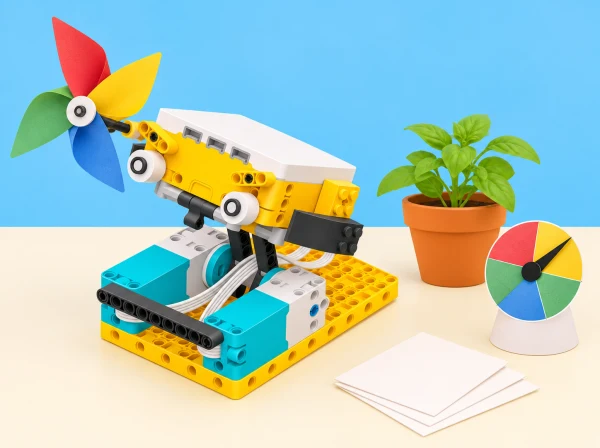
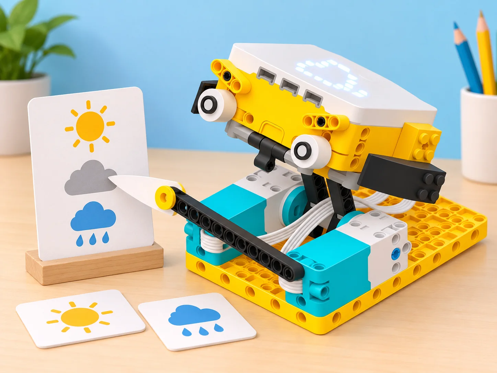
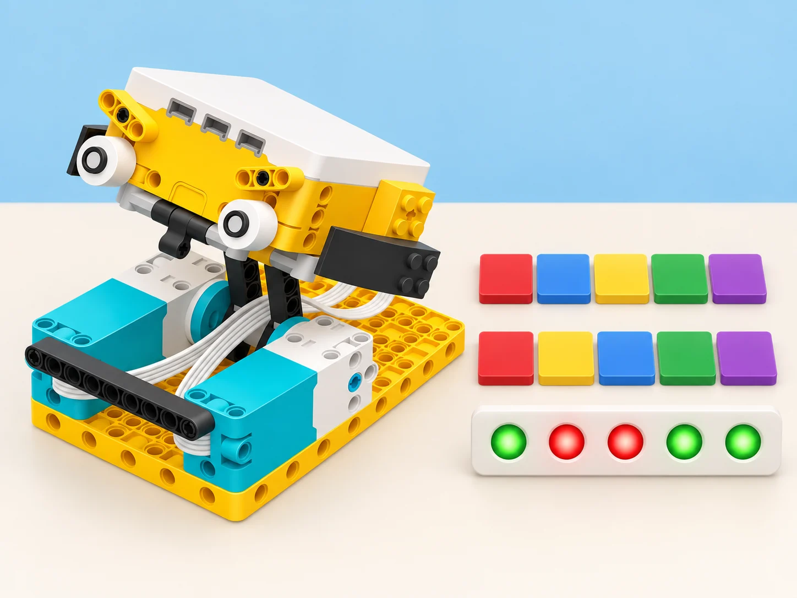

El pati: dades, ritme i decisions
🏷️ Pati, clima i cura de l’hort
🌱 Situació, repte i intenció
🎯 Aprenentatges i vocabulari
- Identificar variables i distingir observacions de valors simulats o inferències.
- Planificar una recollida de dades comparable i repetir mesures mantenint constants les condicions acordades.
- Usar dades i condicions en un programa per respondre a una necessitat fictícia del festival.
- Argumentar una decisió amb gràfics i declarar la incertesa i els límits de la mostra.
🧰 Materials i preparació
Set SPIKE Prime, hub, motors, sensor de color i ordinador/tablet amb l’app que admet els blocs meteorològics. Les sessions S3–S5 necessiten connexió per consultar les previsions al núvol i accés habilitat als blocs de meteorologia; comproveu-ho abans de la classe. Sense xarxa, useu dades o captures datades i identifiqueu-les explícitament com a conjunt guardat, no com a consulta en viu. Afegiu targetes de color, fitxes, cartó per a l’indicador, taules de registre, paper i material de dibuix.
Les dades es refereixen només a ciutats públiques, no a ubicacions personals.
📅 Seqüència didàctica
La classe prepara una mostra interactiva per al pati i l’hort escolar. Cada equip passa d’una observació o necessitat a una prova amb dades, i diferencia sempre una previsió, una mesura del model i una decisió de les persones responsables. El programa no recull dades de salut ni puntua alumnes; cap control automàtic rega o modifica un espai real.
Un mecanisme que balla amb llum i ritme (Break Dance, 45 min)
Fase 1 · Activem i prediem
Dediqueu cinc minuts a parlar de per què convé fer pauses de moviment quan passem molta estona asseguts i de quins senyals ens les poden recordar. El recordatori és una invitació voluntària, mai una ordre ni una avaluació de la salut o l’activitat física de ningú. Predigueu com es poden sincronitzar les cames del ballarí i els píxels de la matriu del hub.
Fase 2 · Explorem i construïm
Durant vint minuts, construïu el ballarí en parelles amb rols de muntatge superior i inferior perquè totes dues persones participen. Executeu el programa inicial i ajusteu el moviment de les cames perquè coincidisca amb el parpelleig de la matriu. Canvieu un paràmetre cada vegada i registreu quina combinació funciona millor. No cal que l’alumnat balle: es pot centrar en el model i observar-ne la seqüència.
Fase 3 · Expliquem i registrem
En cinc minuts, converseu sobre què vol dir sincronitzar i afegiu moviment als braços. Compareu les cames i els braços amb els píxels de la matriu: anoteu el desfasament observat i un ajust proposat. Distingiu el temps en segons, la velocitat del motor i els graus o les rotacions; no són unitats intercanviables.
Fase 4 · Apliquem i millorem
Durant quinze minuts, afegiu sons o notes que encaixen amb els moviments i proveu quants elements podeu sincronitzar sense perdre el ritme. Després, programeu —si el grup ho tria— un senyal a intervals regulars, per exemple cada 30 segons, com a recordatori per a qui vulga alçar-se o moure’s; ningú no ha de seguir-lo.
Com a ampliació, coordineu dues figures com una mostra del pati o, si el kit està complet i disponible, afegiu un tercer motor i el sensor d’ultrasons per a sincronitzar un altre element i la llum del sensor. Deixeu temps per a recollir.
Fase 5 · Comprovem i reflexionem
La rúbrica docent observa si l’alumnat comprén ritme, temps i sincronització, observa el ballarí amb precisió i corregeix el programa amb eficàcia. Autoavaluació individual: blau, les cames se sincronitzen amb la llum; groc, també hi ha braços sincronitzats; violeta, el ballarí es mou a intervals regulars amb ritmes sonors coordinats. Una altra parella dona feedback constructiu.
Com a extensió, exploreu fraccions de compàs o polirítmies com 2/4 amb 3/8; no són necessàries per assolir l’objectiu bàsic. La música, les notes i el moviment corporal de l’alumnat són opcionals.
Repeticions i variables que expliquen el programa (Repeat 5 Times, 45 min)
Fase 1 · Activem i prediem
Dediqueu cinc minuts a parlar de situacions quotidianes en què comptem esdeveniments. Presenteu el repte: programar un mecanisme per a la mostra del pati que repetisca un moviment de bandera cinc vegades i puga informar de quantes n’ha fet. Representeu una variable amb un pot i fitxes: què guarda, quan canvia i quin valor esperem al final? La variable descriu el programa, no el cos ni l’activitat de l’alumnat.
Fase 2 · Explorem i construïm
En quinze minuts, construïu en parelles una figura mecànica amb SPIKE Prime que puga alçar o girar una bandera de paper. Comproveu que els motors estan alineats i executeu el programa base perquè el mecanisme funcione abans d’afegir el recompte. Utilitzeu un bloc de repetició per a fer cinc moviments; no cal que l’alumnat faça cap exercici físic.
Fase 3 · Expliquem i registrem
En deu minuts, creeu una variable numèrica amb un nom clar, com ara moviments, que comence en 0 i augmente en 1 cada vegada que el mecanisme complete un moviment. Executeu el programa i comproveu que, després de cinc repeticions, la variable mostra 5. Expliqueu què representa i en quin punt del programa s’actualitza; distingiu la quantitat de moviments del temps que el motor ha estat actiu.
Fase 4 · Apliquem i millorem
Dins dels quinze minuts d’elaboració —que inclouen el tancament i l’autoavaluació—, afegiu una segona variable per a calcular punts de moviment simulats amb una regla inventada i visible, per exemple dos punts per cada moviment completat: punts = moviments × 2. Modifiqueu el nombre de repeticions, executeu el programa i registreu nombre de moviments i punts en una taula; representeu després la relació en un gràfic senzill.
Els punts són una convenció de l’activitat, no calories, despesa energètica ni una mesura de l’esforç humà. Per a ampliar, alterneu dos moviments lents i tres ràpids, useu comptadors separats i mostreu els valors finals. Per a donar suport, torneu al pot i les fitxes o compteu cada repetició amb marques en paper.
Fase 5 · Comprovem i reflexionem
En els últims cinc minuts d’elaboració, observeu si l’alumnat descriu correctament una variable, la crea i l’actualitza, i la fa servir per a comptar un valor del programa. Autoavaluació individual: blau, he creat una variable que compta els moviments; groc, he afegit una segona variable de punts simulats; violeta, he modificat el programa per a comptar ritmes o seqüències diferents. Una altra parella dona feedback concret sobre el nom de les variables o el lloc on s’actualitzen.
Pronòstic qualitatiu per al pati (Rain or Shine?, 45 min)
Fase 1 · Activem i prediem
Dediqueu cinc minuts a parlar de previsions meteorològiques i dades al núvol: d’on venen i com poden controlar una eixida del programa? Predigueu com podria mostrar la maqueta un dia de pluja o de sol. La proposta treballa amb ciutats públiques, mai amb ubicacions personals.
Fase 2 · Explorem i construïm
Durant 25 minuts, construïu en parelles el weathercaster i comproveu que els motors queden a la posició zero quan els braços estan abaixats. Amb connexió a internet, introduïu una ciutat pública i executeu el programa per observar les dades meteorològiques del bloc de l’app SPIKE. Afegiu una condició IF/ELSE perquè el model mostre si la previsió indica pluja. Els blocs meteorològics consulten previsions al núvol i només funcionen en línia; no llegeixen la pluja ni la nuvolositat del pati.

Fase 3 · Expliquem i registrem
En cinc minuts, converseu sobre com una dada del núvol pot controlar una eixida i què podria passar si canvieu de ciutat o país. Amplieu el programa perquè represente, si l’app les ofereix, categories com «parcialment ennuvolat», «ennuvolat», «pluja», «neu» o «boira». Feu que el motor, la matriu o un altre indicador mostre la categoria. Anoteu l’hora de consulta, la ciutat, la categoria retornada i la decisió del programa; les dades són previsions, no observacions actuals.
Fase 4 · Apliquem i millorem
Durant deu minuts, registreu en una taula la previsió per a almenys dues ciutats i les hores seleccionades dins de les pròximes cinc hores. Compareu-la amb les condicions observades cinc hores després, en la sessió següent o amb dades observades datades preparades prèviament; registreu font i hora i no presenteu la captura arxivada com una consulta en viu.
Si es fa la comparació amb una mostra, calculeu el percentatge de coincidències només d’eixa mostra i no com una mesura universal de precisió del servei. Si el centre no té connexió, executeu la versió amb dades guardades com a simulació desconnectada: els blocs meteorològics no funcionen fora de línia. Deixeu temps per a recollir.
Fase 5 · Comprovem i reflexionem
Autoavaluació individual: blau, he programat la previsió d’una ciutat; groc, he comparat dues ciutats amb dades registrades; violeta, he justificat quin dels dos llocs triaria per a una activitat exterior del centre i he explicat els límits de la mostra. Una altra parella revisa si la condició correspon a la categoria registrada i si la taula separa previsió d’observació.
Parleu de dades al núvol, connexió, latència i diferència entre previsió i realitat; cap resultat d’una sola sessió garanteix què passarà ni s’ha d’usar per a decisions de seguretat.
Un indicador de vent i escala de Beaufort (Wind Speed, 45–60 min)
Fase 1 · Activem i prediem
Trieu una ciutat pública i predigueu la classificació del valor de vent consultat. Distingiu la calma (0–<0,5 m/s, força 0) dels quatre colors: blau 0,5–<5,5; verd 5,5–<13,8; groc 13,8–<24,4; roig ≥24,4 m/s. Els colors agrupen forces segons el resum de LEGO; la força 12 no té límit superior.
Fase 2 · Explorem i construïm
Construïu un indicador mecànic amb motor i una agulla sobre quatre zones pròpies, més una marca diferenciada per a la calma. Llegiu el valor quantitatiu que retorna el bloc meteorològic i programeu condicions IF/ELSE per als intervals anteriors. Valideu valors de frontera i rebutgeu entrades negatives, absents o no numèriques; una velocitat superior a 32,7 m/s continua en la banda roja.
Fase 3 · Expliquem i registrem
Feu visible la classificació amb el marcador i representeu la direcció amb fletxes a la matriu de llum. Compareu tres localitats públiques —per exemple, València, una població de l’interior i una de costa— i registreu velocitat, direcció, categoria i font.
Fase 4 · Apliquem i millorem
Proveu 0; 0,49; 0,5; 5,49; 5,5; 13,79; 13,8; 24,39; 24,4; 32,7 i 32,71 m/s, a més d’una entrada invàlida, i reviseu que cada dada vàlida tinga una sola classificació. Com a extensió, redissenyeu el marcador perquè es recalibre amb una escala diferent; sense xarxa, treballeu amb dades d’exemple datades.
Fase 5 · Comprovem i reflexionem
Quanta pluja podria rebre l’hort? (Veggie Love, 45–60 min)
Fase 1 · Activem i prediem
Predigueu com es pot representar en una escala la precipitació acumulada prevista per a la pròxima setmana i quines unitats necessitarà el marcador.
Fase 2 · Explorem i construïm
Muntem un «pluviòmetre de paper» accionat per motor. Consulteu els blocs meteorològics per a una ciutat i transformeu el valor previst en una posició de l’agulla.
Fase 3 · Expliquem i registrem
Comproveu si el marcador correspon a les unitats i rang definits. Registreu la taula de conversió i contrasteu-la amb una targeta de necessitats d’aigua de tomaca i una altra hortalissa, citant la font o marcant el valor com a simulat.
Fase 4 · Apliquem i millorem
Proveu una escala de temperatura i expliqueu per què cal recalibrar-la. La maqueta pot mostrar «revisar el reg» com a pregunta: no activa una vàlvula ni determina la necessitat d’una planta real només amb la pluja prevista. Sense connexió, useu una previsió guardada i datada.
Fase 5 · Comprovem i reflexionem
Un joc de memòria amb dues llistes (Brain Game, 45–90 min)
Fase 1 · Activem i prediem
Presenteu un repte de memòria cooperatiu: dues persones llegiran seqüències de peces de colors i el robot indicarà en quines posicions coincideixen. Abans de construir, ordeneu tres targetes i predigueu què passa si es canvia de lloc una sola peça. Expliqueu que l’activitat practica patrons i dades; no diagnostica ni entrena cap capacitat cognitiva o de salut.
Fase 2 · Explorem i construïm
Durant 15 minuts, munteu en parella el cap i el cos del model Game Master, repartint tasques perquè totes dues persones participen. Comproveu que el sensor de color queda alineat amb la peça abans de programar. La primera persona passa una tira de cinc peces i el programa registra, en ordre, les lectures en llista_1; la segona passa la seua tira i ompli llista_2. Comenceu amb tres peces si cal i augmenteu a cinc quan les lectures siguen repetibles.
Si una peça no es reconeix amb prou estabilitat, repetiu la lectura o useu una seqüència de targetes identificada com a simulació.

Fase 3 · Expliquem i registrem
En els 10 minuts d’explicació, programeu la lectura de cada seqüència en una llista i compareu els valors pel mateix índex. En cada posició, feu que la matriu LED indique si hi ha coincidència; registreu també les lectures reals per detectar una fallada del sensor abans de culpar el programa. Traceu una prova curta en paper i expliqueu per què l’ordre de les dades importa.
per cada posició de les dues llistes:
si llista_1[posició] = llista_2[posició]:
mostra coincidència
si no:
mostra diferènciaFase 4 · Apliquem i millorem
Durant 15 minuts, proveu coincidència total, parcial i nul·la. Després de veure el resultat, la segona persona pot reordenar les peces per acostar-se a la primera seqüència; si trieu jugar amb un límit, feu-lo de cinc intents i mostreu clarament quants en queden. Canvieu el patró LED perquè encerts i diferències siguen fàcils de distingir, també sense dependre només del color (per exemple, afegiu una forma o un nombre de polsos).
Com a ampliació, afegiu més colors només després de comprovar que el sensor els discrimina, o registreu anònimament temps i intents de cada ronda per representar dues variables en un gràfic. No guardeu noms ni utilitzeu els resultats per comparar persones.
Fase 5 · Comprovem i reflexionem
Una parella revisora comprova el joc amb una seqüència de prova que conega, confirma la coincidència per índex i dona una proposta concreta de millora. Autoavaluació: blau, puc explicar i usar una llista; groc, puc crear i comparar una segona llista; violeta, puc aplicar més d’una operació o resoldre una variant del joc.
En l’ampliació estadística, expliqueu índex, probabilitat, mitjana i valor mitjà amb les dades anònimes del joc.
Un entrenador per a practicar una habilitat (The Coach, projecte de 2–3 sessions)
Fase 1 · Activem i prediem
Cada equip escull una habilitat que algú vulga practicar, com seguir una seqüència rítmica, muntar una estructura o aprendre un recorregut de paper; participar és voluntari. Esbrineu què voldria millorar la persona i quina dada podria ajudar-hi.
Fase 2 · Explorem i construïm
Dibuixeu dues idees, prototipeu-les i proveu-les amb una pauta curta. Seleccioneu una solució i desenvolupeu-la amb peces SPIKE i un programa guia.
Fase 3 · Expliquem i registrem
Registreu una dada triada per la persona —pas completat, nombre d’intents o durada— en un quadern d’inventor amb textos, dibuixos, proves, decisions i canvis. La dada descriu l’eina i la pràctica consentida, no compara alumnes ni mesura salut.
Fase 4 · Apliquem i millorem
Proveu el coach, demaneu retorn, feu una iteració i presenteu què ajuda i què no pot fer. L’alternativa guiada ofereix un repte comú i blocs d’inici; qualsevol prova amb altres participants requereix consentiment i eliminació de les notes personals després.
Fase 5 · Comprovem i reflexionem
Tanqueu amb una exposició breu —pòster, web local o presentació oral— sobre objectiu, usuari, dades, prototip i límits.
Escriure el codi d’una coreografia (Code Your Moves, 45 min, desconnectada)
Fase 1 · Activem i prediem
Definiu «algorisme», «pseudocodi», «descomposició» i «error» amb una rutina o joc de palmades conegut per la classe. Predigueu quines instruccions necessitarà una altra parella per reproduir-lo.
Fase 2 · Explorem i construïm
Cada parella inventa un gest o seqüència rítmica breu, la divideix en passos numerats i marca repeticions, direccions i pauses amb paraules o pictogrames.
Fase 3 · Expliquem i registrem
Una altra parella executa les instruccions sense que l’autora les explique. Marqueu el punt ambigu i compareu què han entés amb què volia indicar el pseudocodi.
Fase 4 · Apliquem i millorem
Afegiu una precisió a la instrucció i torneu a provar. Si es vol, traduïu un dels passos a un bloc de moviment de Break Dance; aquesta transferència és una extensió i la tasca es completa sense kit, peces ni programari.
Fase 5 · Comprovem i reflexionem
🧪 Evidències i avaluació
El quadern recull el diagrama rítmic, pseudocodi i variables, taules amb font/hora/lloc per a pronòstics qualitatius i quantitatius, classificació Beaufort amb valors límit provats, escala calibrada de precipitació, joc de memòria amb les dues llistes i casos de comparació, prototip de coach i pseudocodi desconnectat. La rúbrica comprova que cada equip explique quin bloc transforma la dada en acció, distingisca previsió de realitat, justifique calibratge i unitats, detecte una limitació o error i revise el prototip després de provar-lo.
No s’avalua si el pronòstic encerta ni la capacitat física o rendiment de cap persona.
♿ Participació, accessibilitat i seguretat
Totes les coreografies es poden dirigir, representar amb pictogrames o fitxes i no requereixen moviment corporal. El joc de memòria pot començar en paper; combineu cada color amb una forma i una paraula. Oferiu gràfiques amb eixos marcats i taules ampliades, i accepteu una ciutat de dades ja preparada si els blocs en línia no estan disponibles. No recolliu dades personals, corporals, noms ni ubicacions de l’alumnat;
en el projecte de coach, el participant tria les dades, pot no participar i pot demanar que les seues notes s’esborren.
🔗 Referents i adaptació
Les vuit sessions enllacen les lliçons oficials de LEGO Education: Life Hacks. Es conserven els objectius de sincronització de moviment/llum/so, variables i operacions, ús de dades meteorològiques qualitatives i quantitatives al núvol, escala de Beaufort, calibratge de precipitació, comparació d’arrays, el joc de memòria amb torns/reintents i extensió estadística anònima, disseny d’un entrenador amb dades, quadern d’inventor i presentació final, i escriptura desconnectada de pseudocodi. Les sessions de previsió en viu depenen de connexió i blocs meteorològics actius a l’app;
la font, hora, ubicació consultada i mode en viu/guardat s’anoten per a poder repetir-les. El context del pati i l’hort, els materials, els guions, les dades de prova i la imatge són propis.